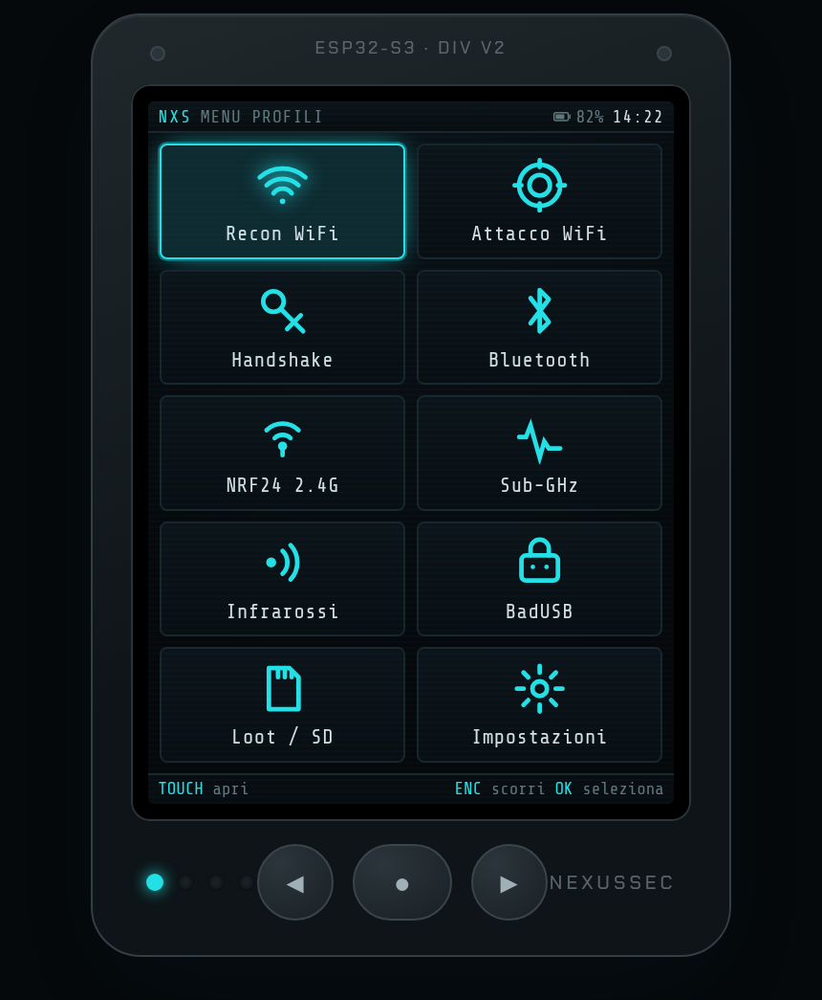
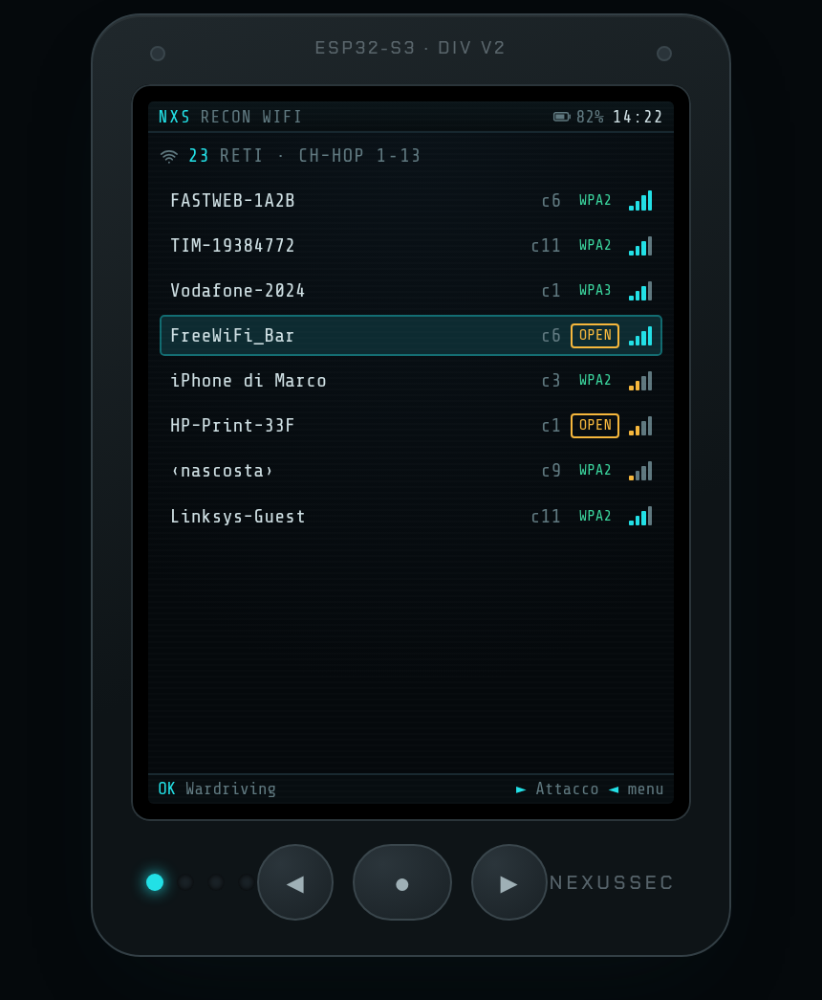
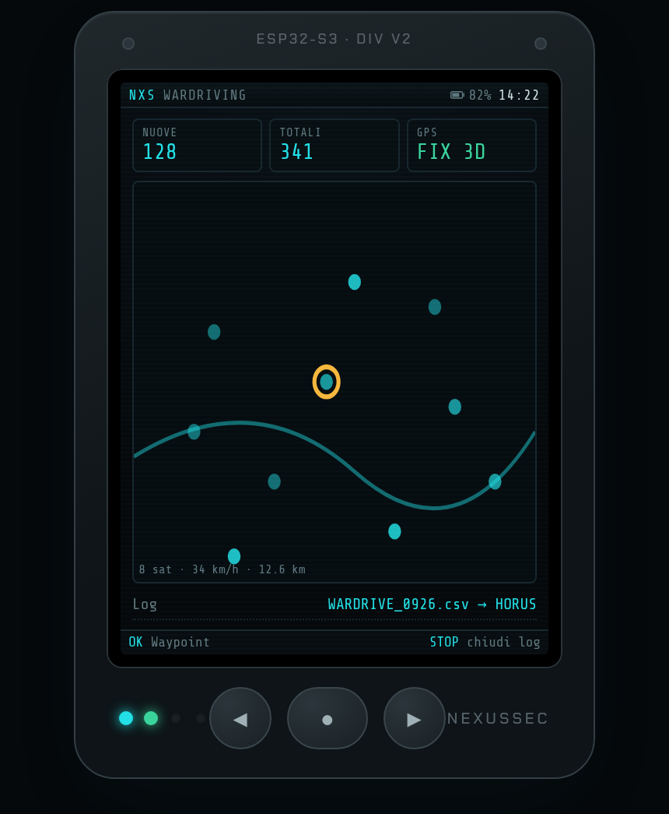
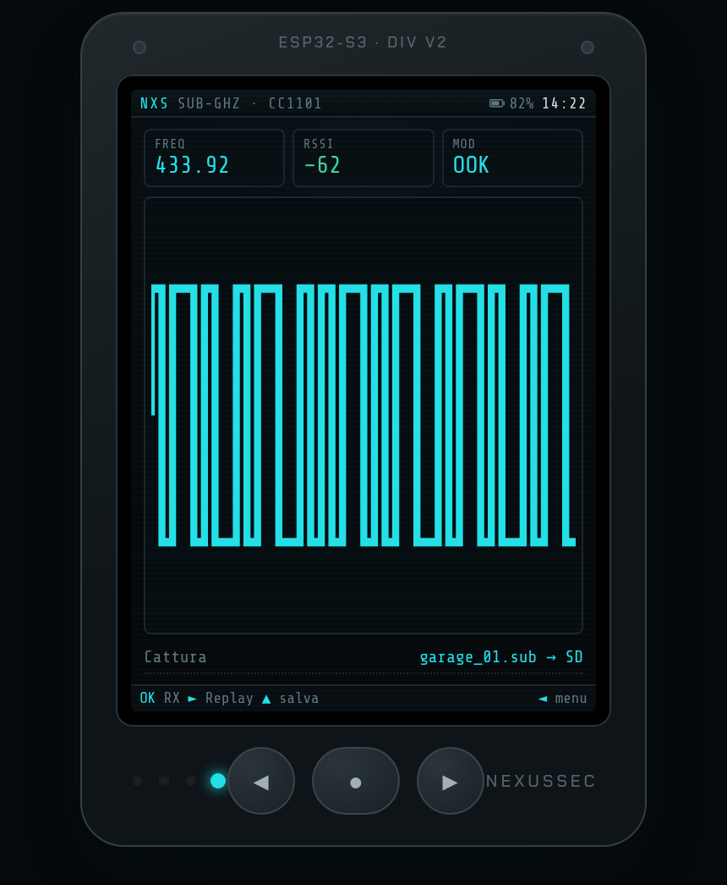
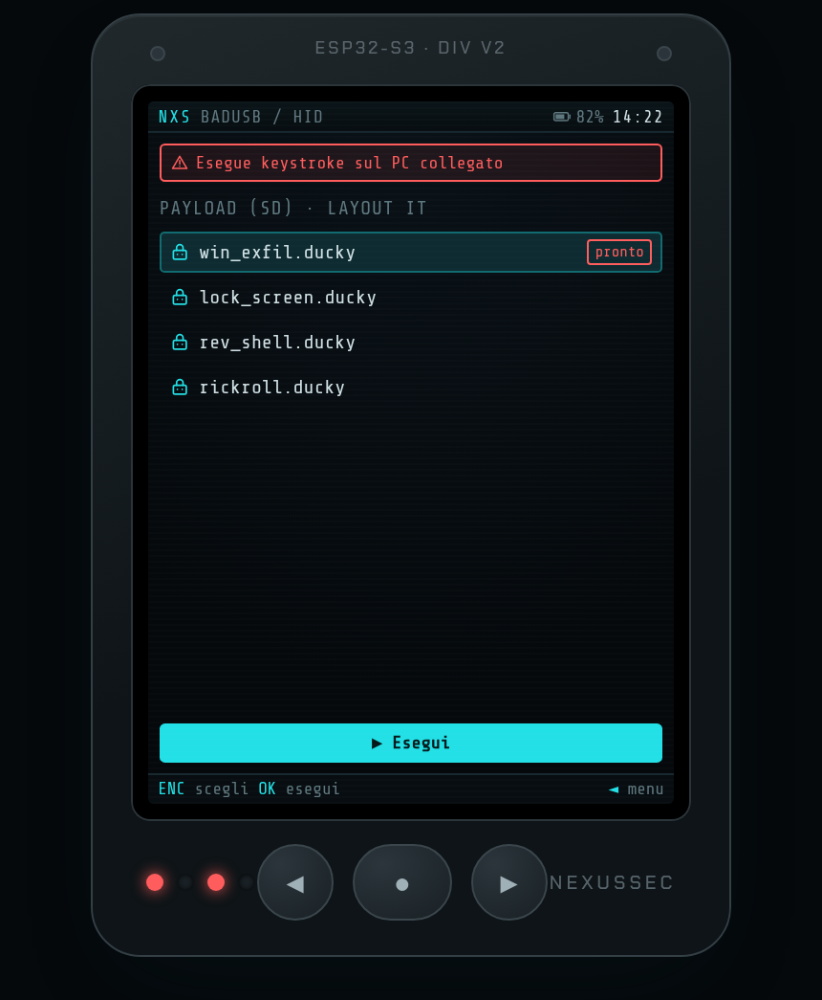
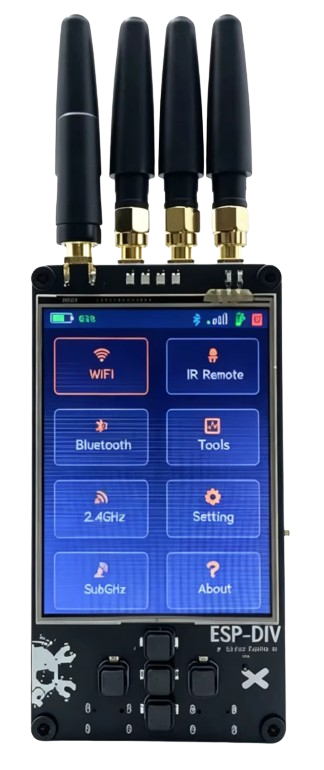
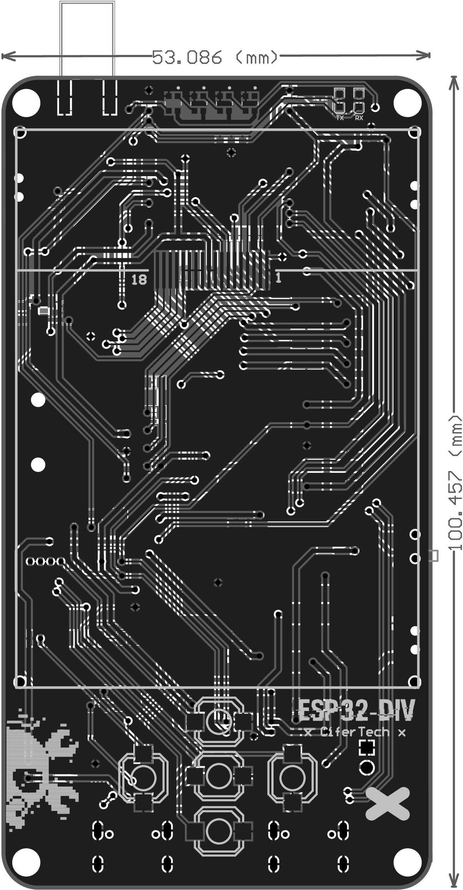

NexusSec · hardware
Un multi-tool wireless in stile Flipper basato su ESP32-DIV V2: WiFi/BLE, 2,4 GHz (NRF24), sub-GHz (CC1101) e infrarossi in un solo gadget. È il corollario hardware di NexusSec: la distro NexusSec OS lo flesha con un profilo e ne raccoglie i risultati. A Flipper-style wireless multi-tool based on ESP32-DIV V2: WiFi/BLE, 2.4 GHz (NRF24), sub-GHz (CC1101) and infrared in one gadget. The hardware corollary of NexusSec: the NexusSec OS distro flashes it with a profile and gathers its results.
La ESP32-DIV è un microcontrollore (ESP32-S3): non esegue Linux, ma unisce più radio in un solo dispositivo tascabile che la distro prepara e da cui riprende i dati.The ESP32-DIV is a microcontroller (ESP32-S3): it does not run Linux, but it combines several radios in one pocket device that the distro prepares and reads back.
Menu semplice, con profili adattati all'hardware.A simple menu, with profiles adapted to the hardware.
Schermate del firmware NexusSec sul display 320×240 (verticale). UI flat, accent cyan, menu a profili.NexusSec firmware screens on the 320×240 display (portrait). Flat UI, cyan accent, profile menu.





esptool (nxs-esp32).
The distro flashes the ESP32 with the chosen profile, via esptool (nxs-esp32).Multi-tool open-source di CiferTech (licenza MIT). Più radio in una scheda tascabile.Open-source multi-tool by CiferTech (MIT license). Several radios in one pocket board.


La scheda si può usare in due modi; entrambi restano integrati con la distro.The board can be used in two ways; both stay integrated with the distro.